Team 2015-2016 | ||||||
| 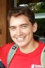 | Ruslan Iskhakov RSA President ERE PhD student |
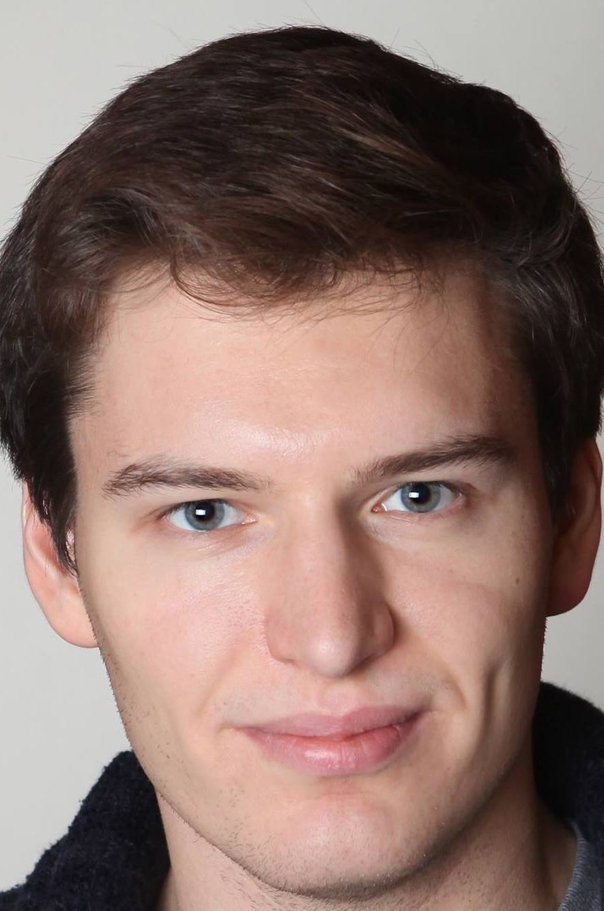 | Dmitry Arkhangelsky RSA Vice-President GSB PhD student |
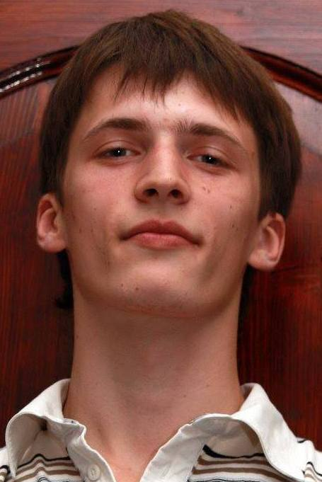 | Sergey Klevtsov RSA Financial Officer ERE Master Student |
|
| 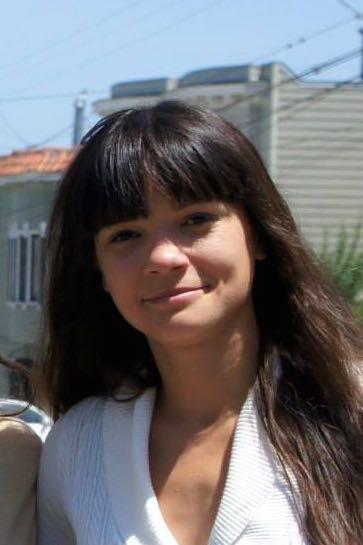 | Victoria Popic Movie night lead CS PhD student |
 |
Valeria Nikolaenko Web page moderator CS PhD student |
|||
Team 2014-2015 | ||||||
| 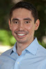 | Pavel Izhutov RSA President GSB PhD student |
Ruslan Iskhakov RSA Financial Officer ERE PhD student |
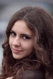 | Anna Pahlevanyan RSA Vice President MSnE master student |
||
| Victoria Popic Movie night lead CS PhD student |
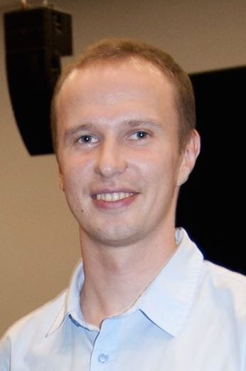 | Andrey Ovsyannikov Movie night lead Physics Postdoc |
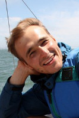 | Oleg Rumyantsev Creative lead Applied Physics PhD student |
||
| Dmitry Arkhangelsky Sociocultural lead GSB PhD student |
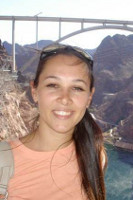 | Inessa Yurchenko Creative lead Geology PhD student |
|
Valeria Nikolaenko Web page moderator CS PhD student |
||
Team 2013-2014 | ||||||
| Oleg Rumyantsev Applied Physics PhD student RSA President olegr at stanford dot edu |
Inessa Yurchenko Geology PhD student RSA Financial Officer |
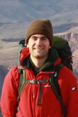 | Volodymyr Kuleshov Computer Science PhD student RSA Vice President |
|||
Team 2012-2013 |
||||||
| 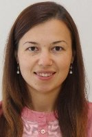 | Larisa Masalimova Geology PhD student RSA President |
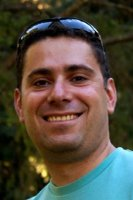 | David Boinagrov Physics PhD student RSA Financial Officer |
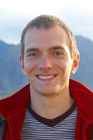 | Alex Nikulkov GSB PhD student RSA Vice President |
|
Team 2011-2012 |
||||||
| 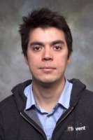 | Dmitry Pushkarev Physics PhD student RSA President |
Larisa Masalimova Geology PhD student RSA Financial Officer |
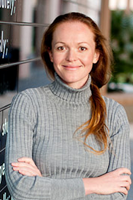 | Anastasia Zakolyukina GSB PhD student RSA Vice President |
||
Team 2010-2011 |
||||||
| 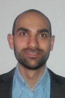 | David Davtyan GSB graduate student RSA President |
Anastasia Zakolyukina GSB PhD student RSA Financial Officer |
Larisa Masalimova Geology PhD student RSA Vice President |
|||
Team 2009-2010 |
||||||
| 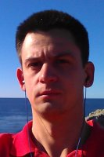 | Vasily Starostenko GSB graduate student RSA President |
Anastasia Zakolyukina GSB PhD student RSA Financial Officer |
Larisa Masalimova Geology PhD student RSA Vice President |
|||
Team 2008-2009 |
||||||
| 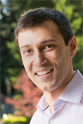 | Alexander Nezlobin GSB graduate student RSA President |
|||||